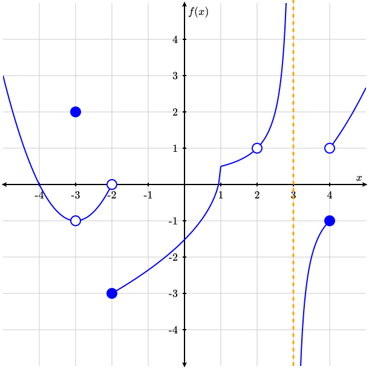
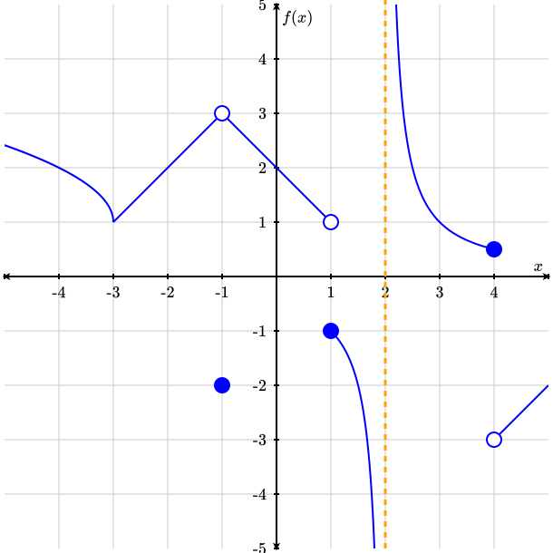

Let \(f(x)\) and \(g(x)\) be function and suppose that \(\displaystyle \lim_{x\rightarrow a}f(x)\) and \(\displaystyle \lim_{x\rightarrow a}g(x)\) exists and are finite. Choose either TRUE or FALSE for each of the following statements. Keep in mind potential counterexamples.
Identify the points on the graph below where the function \(f(x)\) is discontinuous. Then, classify each discontinuity as a jump discontinuity, a removable discontinuity (hole), or a vertical asymptote.

A graph of a piecewise \(f(x)\) with four disconnected regions. The first, an upward facing parabola from \(x=-5\) to \(x=-2\text{,}\) with roots at \(-4\) and \(-2\text{,}\) empty dots at \((-3,-1), (-2,0)\text{,}\) and a solid dot at \((-3,2)\text{.}\) The second region, from \(x=-2\) to \(x=3\text{,}\) shaped like an inverted square root function from \(x=-2\) to \(x=1\text{,}\) increasing from left to right with a solid dot at \((-2,-3)\text{,}\) and the left half of a hyperbola from \(x=1\) to \(x=3\text{,}\) increasing from left to right with an empty dot at \(x=2\text{,}\) and a dashed line at \(x=3\text{.}\) The third, from \(x=3\) to \(x=4\text{,}\) is the right half of a hyperbola, increasing from left to right with a solid dot at \((4,-1)\text{.}\) The fourth, from \(x=4\) to \(x=5\) is an almost linear curve increasing from left to right with an empty dot at \((4,1)\text{.}\)
Graph Setup: The image shows a standard 2D grid with a horizontal x-axis and a vertical f(x)-axis, both ranging from -10 to 10 with tick marks at intervals of 1. Three dashed orange vertical lines run through the entire height of the grid at x = -5, x = 4, and x = 7. Behavior of the Piecewise Function from Left to Right: From x = -10 to x = -3: Approaching from x = -10, the curve lies just below the x-axis and plunges downward toward negative infinity as it approaches x = -5. To the right of x = -5, the curve emerges from positive infinity and slopes downward, ending at x = -3 with an open circle at (-3, 0.5). From x = -3 to x = 0: This segment begins with a solid closed circle at (-3, 2), creating a jump discontinuity from the previous section. It travels upward as a straight line with a positive slope, connecting smoothly to the next section at (0, 4). From x = 0 to x = 4: The segment starts at (0, 4) and curves gently downward. At x = 1, an open circle sits at (1, 3), while a solid closed circle is plotted below it at (1, -1). The curve continues downward past this point and terminates at a solid closed circle at (4, 2). From x = 4 to x = 7: This segment is bound between x = 4 and x = 7. The curve forms an inverted U-shape entirely below the x-axis, approaching negative infinity as it gets closer to both x = 4 and x = 7. From x = 7 to x = 10: This segment begins at a solid closed circle at (7, 5), which serves as the vertex of a parabola. The curve opens upward and arches toward the top-right corner of the grid as x approaches 10.
Complete the table below, describing the value/behavior of the function \(f(x)\) at the given \(a\)-values and using the given graph. If the value does not exist, and is not \(\pm \infty\text{,}\) write DNE.
\(\displaystyle \lim_{x\rightarrow -1}g(x)\) if \(g(x)=\begin{cases}\dfrac{x^2-6x-7}{x^2-1} \amp x \lt -1\\ 5 \amp x = -1\\ 2x^2+3x+5 \amp x \gt -1\end{cases}\)
\(\displaystyle \lim_{x \rightarrow 2}g(x)\) where \(f(x) \le g(x) \le h(x)\) on \([1,2]\) with \(f(x)=-x^3+6x^2-12x+15\) and \(h(x)=x^2-4x+11\text{.}\)
At which of these \(a\)-values does \(\displaystyle \lim_{x\rightarrow a}f(x)\) not exist?

Graph Setup: The image shows a standard 2D grid with a horizontal x-axis and a vertical f(x)-axis, both ranging from -5 to 5 with tick marks at intervals of 1. A dashed orange vertical line runs through the entire height of the grid at x = 2. Behavior of the Piecewise Function from Left to Right: From x = -5 to x = -3: Starting at the left boundary of the grid at approximately (-5, 2.41), the curve slopes gently downward to the right and meets the next segment smoothly at (-3, 1). From x = -3 to x = -1: Continuing from (-3, 1), the segment travels upward as a straight line with a positive slope, ending at x = -1 with an open circle at (-1, 3). A solid closed circle is plotted below it at (-1, -2), creating a jump discontinuity. From x = -1 to x = 1: Starting near the open circle at (-1, 3), the segment slopes downward to the right as a straight line, ending at x = 1 with an open circle at (1, 1). A solid closed circle sits below it at (1, -1). From x = 1 to x = 2: Beginning at the solid closed circle at (1, -1), the curve plunges downward toward negative infinity as it approaches the dashed vertical line at x = 2. From x = 2 to x = 4: To the right of the dashed vertical line at x = 2, the curve emerges from positive infinity and slopes downward to the right, terminating at a solid closed circle at (4, 0.5). From x = 4 to x = 5: This segment begins at an open circle at (4, -3), creating a jump discontinuity from the previous point. It travels upward as a straight line with a positive slope, ending at the right edge of the grid at (5, -2).